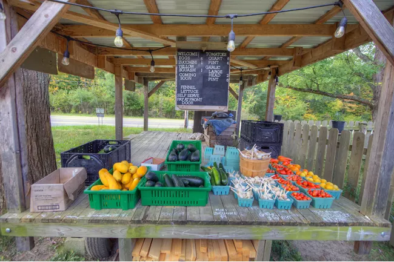

Trapp Family Farm
Trapp Family Farm, a sustainable mixed crop-and-livestock family farm since 2012, uses draft horses for power. They sell seasonal eggs, produce, and meat on-site. The farm strives to build a resilient community supported by healthy people, plants, animals, and soil.